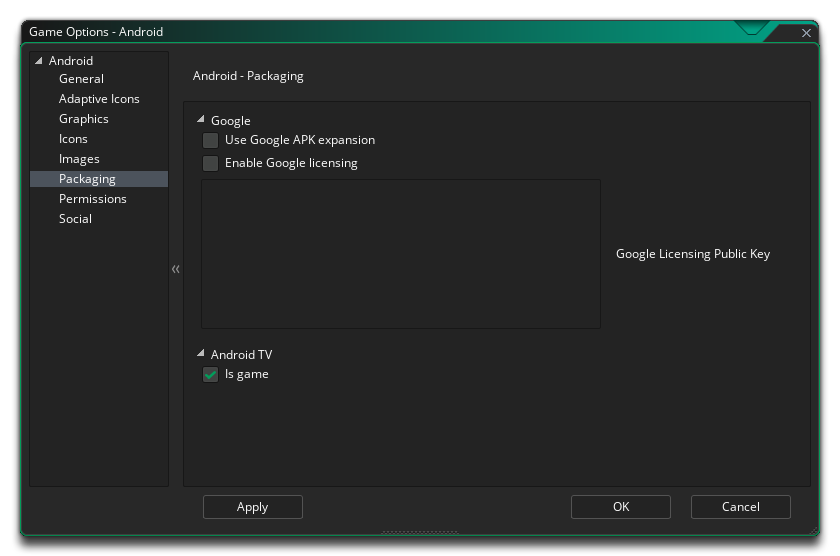
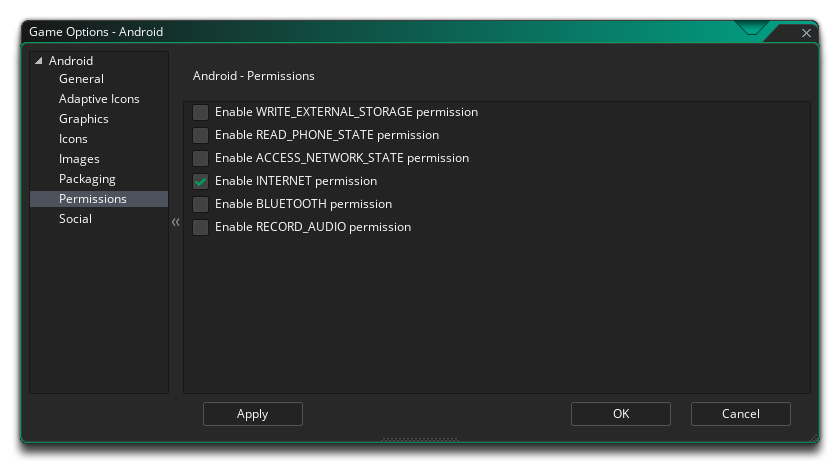
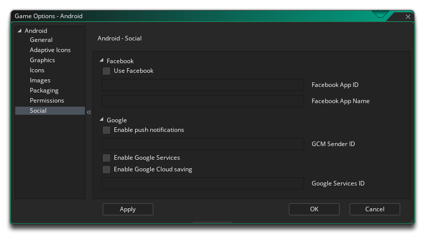

En esta sección se describen las diferentes opciones disponibles para usted que controlan cómo se compilarán los proyectos de juegos de Android. Las diferentes secciones son:
La primera parte de la sección General está dedicada a la Información del producto y la Configuración de compilación. Debe completar la información del Producto, que incluye el Nombre para mostrar del proyecto, su información de Paquete, que consiste en un Dominio, Compañía y Producto. La información del paquete solo puede estar formada por letras de AZ y números del 0 al 9, sin símbolos u otros caracteres especiales, ni debe tener caracteres en mayúscula. Estos detalles se usarán para generar un ID de paquete con el formato " com.company.myappname ".
Luego debe establecer las versiones Target, Minimum y Compile SDK. La versión de Compile SDK es la versión de la API contra la que se compila el proyecto. Esto significa que puede usar Android características de la API de Android incluidas en esa versión de la API. Si intentas utilizar las características de la API 16, por ejemplo, pero configuras Compilar SDK 15, obtendrás un error de compilación. Si configura el SDK de compilación en 16, puede ejecutar la aplicación en un dispositivo API 15 (al igual que en todas las demás versiones anteriores).
El Target SDK, sin embargo, no tiene nada que ver con la forma en que se compila su aplicación ni con qué API puede utilizar. El Target SDK indica que ha probado su aplicación (hasta e incluyendo) la versión que especifique. Esto es simplemente para darle al Android operativo Android una idea de cómo debe manejar su aplicación en términos de las características del sistema operativo. Para todos los propósitos prácticos, la mayoría de las aplicaciones querrán configurar el SDK de destino en la versión más reciente de la API (tal como lo utiliza la configuración de Compilar SDK). Esto garantizará que su aplicación se vea lo mejor posible en los dispositivos Android más recientes.
La versión mínima de SDK es el nivel mínimo de API que ejecutará su proyecto. Esto se establece en 9 de manera predeterminada, y en general esto estará bien, pero si agrega extensiones, entonces es posible que requiera un nivel API mínimo más alto.
La segunda parte de la sección General cubre las arquitecturas de CPU para compilar, con las siguientes opciones disponibles (puede seleccionar todas o solo aquellas que necesite, pero tenga en cuenta que cada una de ellas se agregará al tamaño final de las compiladas apk )
- Build para ARMV5 (marcado por defecto)
- Build para ARMV7 (verificado por defecto)
- Construir para x86
- Construir para Mips
Después de configurarlo, puede seleccionar las diferentes orientaciones en las que se puede ejecutar su juego para la mejor experiencia de usuario. Las opciones disponibles son:
- Paisaje
- Retrato
- Paisaje volteado
- Retrato invertido
Finalmente tienes las siguientes opciones variadas:
- Habilite la compatibilidad con Bluetooth / iCade: Esto agregará soporte para los gamepads bluetooth o iCade a su proyecto de juego. Esto está predeterminado.
- Habilite la compatibilidad con el tablero de juegos MOGA: Esto permitirá el soporte para los controladores MOGA. Tenga en cuenta que se accede a todas las funciones de MOGA a través de una extensión y, cuando marque esta opción por primera vez, se le pedirá que descargue e instale la extensión MOGA desde Marketplace. Esta opción está apagada por defecto.
- Ejecutar análisis de código de pelusa: cuando esta opción está marcada, las herramientas de compilación ejecutarán un análisis de código de pelusa en el proyecto a medida que se genera, proporcionando una verificación de error más exhaustiva y mostrando más información en la ventana de salida a medida que el proyecto compila (un LOG también se creará un archivo, con la ruta al archivo que se muestra al final de la compilación en la Ventana de salida). Tenga en cuenta que no todo lo que marca el análisis de pelusa como un error es necesariamente problemático para su juego, y tener esto habilitado puede significar que su juego ya no se compila, aunque cuando está desactivado, se compilará y correrá bien. Esencialmente, esto es solo para la depuración, y la opción está desactivada por defecto.
- Ubicación de instalación: aquí puede establecer la ubicación de instalación predeterminada para su juego. Esto se puede establecer en Automático, en cuyo caso el juego se instalará en la ubicación elegida por el usuario en su dispositivo, o se puede establecer en Preferir Externo, que siempre intentará instalar el juego en el almacenamiento externo del dispositivo..
También puede establecer el margen de suspensión de Android aquí. Esta opción está relacionada con la reducción del tartamudeo cuando se ejecuta el juego en sistemas específicos. Básicamente, si su juego se ejecuta más rápido que la velocidad de su habitación, GameMaker Studio 2 "dormirá" durante el tiempo restante, pero este sueño puede ser bastante impreciso y, a menudo, puede terminar durmiendo más de lo necesario, lo que hace que su marco tarde más tiempo. causa tartamudeo. Para evitar esto, podemos dormir por menos tiempo, luego nos sentamos en un circuito cerrado por el resto del tiempo para hacerlo más preciso, aunque el problema de permanecer en un bucle es que hace que el uso de la CPU aumente, lo que a su vez puede causa que la temperatura de su CPU aumente y su dispositivo use más batería. De forma predeterminada, este valor se establece en 4, y en el 99,99% de los casos, estará bien con esto, pero para dispositivos de gama baja o para dispositivos con muchos procesos en segundo plano, puede que esto no sea una solución ideal y un valor de 5 hasta 10 puede ser requerido. Sin embargo, tenga en cuenta que esta es una configuración bastante específica del dispositivo y que lo que funciona en su dispositivo de compilación puede no ser apropiado para otro usuario y, como tal, si tiene dudas, déjelo en 4.
Aquí puede cambiar los siguientes detalles relacionados con la visualización de su juego, con las siguientes opciones disponibles:
- Interpolar colores entre píxeles: activa la interpolación, que básicamente "suaviza" los píxeles. para gráficos nítidos de píxeles, debería estar apagado, pero si tiene buenas mezclas alfa y gráficos de bordes suavizados, es mejor dejarlos encendidos. El valor predeterminado es desactivado.
- Profundidad del color de la pantalla: Esto se puede usar para configurar la profundidad de color para renderizar a 16 bits o a 24 bits. Esto afectará la compatibilidad con algunos dispositivos más antiguos si está configurado en 24 bits, y también aumentará el valor de ashmem que se necesita (esta es la memoria compartida en dispositivos Android ).
- Soporte del dispositivo Esta opción establecerá si solo admite dispositivos que tienen una GPU dedicada o todos los dispositivos. Básicamente, si su juego tiene funciones de dibujo avanzadas como mezcla alfa, mezcla aditiva, superficies, etc., debe limitarlo a aquellos dispositivos que tengan una GPU, de lo contrario correrá el riesgo de recibir comentarios negativos y una calificación baja para su juego debido a a errores gráficos o bloqueos en dispositivos más antiguos.
- Escalado: su juego puede configurarse para escalar el lienzo de dibujo automáticamente para mantener la relación de aspecto dentro del navegador, o puede seleccionar que se estire para ajustarse. La opción de estirar para ajustar no hará una pantalla completa del juego en el navegador, sino que estirará lo que se dibuja para ajustarse al tamaño del lienzo, según lo define la primera sala del juego.
Finalmente, existe la opción de establecer el tamaño de la Página de Textura. El tamaño predeterminado (y el más compatible) es 2048x2048, pero puede elegir entre 256x256 hasta 4096x4096. También hay un botón marcado Vista previa que generará las páginas de textura para esta plataforma y luego abrirá una ventana para que pueda ver cómo se ven. Esto puede ser muy útil si desea ver cómo se estructuran las páginas de textura y para evitar que las páginas de textura sean más grandes (o más pequeñas) de lo necesario.
NOTA: tenga en cuenta que cuanto mayor sea el tamaño de la página de textura, menos compatible será su juego.
Esta sección le permite agregar las diversas imágenes de los iconos que su proyecto necesitará para las diferentes páginas y dispositivos de la tienda. Todas las imágenes de los iconos se deben crear como archivos PNG de 24 bits con los tamaños adecuados.
Vale la pena señalar que GameMaker Studio 2 tiene una herramienta Project Image Generator que se puede utilizar para crear automáticamente todos los iconos necesarios para todas las diferentes plataformas de destino en las que se está compilando su juego. Si usa esta herramienta, debe revisar las imágenes creadas para asegurarse de que son lo que necesita.
Aquí puede agregar una pantalla de bienvenida al archivo de juego final, tanto para el modo horizontal como vertical, que se mostrará mientras el juego se carga en el dispositivo. Esta pantalla debe ser un archivo PNG de 24 bits, y se recomienda que sea del mismo tamaño que la primera sala (o vista) de su juego. Si necesita que se muestre la pantalla de bienvenida durante un tiempo específico, también puede configurarla de 0 a 10 segundos (el tiempo predeterminado de 0 significa que solo se mostrará durante la carga del activo).
Vale la pena señalar que GameMaker Studio 2 tiene una herramienta Project Image Generator que se puede utilizar para crear automáticamente todas las imágenes necesarias para todas las plataformas de destino diferentes en las que se está compilando su juego. Si usa esta herramienta, debe revisar las imágenes creadas para asegurarse de que son lo que necesita.

Una de las características de usar Google Play para tus juegos de Android es la capacidad de licenciar tus juegos. Esto significa que sus juegos serán controlados por Google para que solo las personas que lo hayan descargado a través de su mercado puedan jugar, evitando que se distribuyan copias ilegales de su producto.
Para activar esta función en su juego, primero debe marcar el casillero Habilitar licencia de Google y luego copiar su clave pública en la casilla denominada clave pública de licencias de Google. Puede encontrar esta licencia yendo a su página de desarrolladores de Google Play y luego seleccionando el juego que desea editar. Una vez en la página del perfil del juego, desplácese hacia abajo a la sección titulada "Servicios y API" y allí debe encontrar la clave pública que se necesita para habilitar esta funcionalidad.
Una vez activado, si alguien que no está autorizado a poseer su juego intenta jugarlo, se le mostrará un cuadro de mensaje emergente que le informará que la Licencia no se puede encontrar en su dispositivo, y luego le dará la opción de volver a intentarlo y prueba nuevamente, o sal del juego.
Otra característica de Licensing es que tu juego puede usar expansiones APK. Esta es una forma de eludir el tamaño máximo de aplicación de 50MB impuesto por Google Play (y solo Google Play). Creará tu juego en dos partes: una pequeña *.apk archivo y una más grande *.zip archivo que contendrá todos los activos de tus juegos, y ambos se subirán a la tienda. Cuando el usuario ejecuta su juego por primera vez, el zip se descargará y desempaquetará. Puede encontrar más detalles de esta opción aquí.

Desde esta pestaña, puede cambiar algunos de los permisos que su juego puede solicitar dentro del Manifiesto de Android. GameMaker Studio 2 asignará los permisos automáticamente según sea necesario, sin embargo, es posible que necesite un permiso para su juego que no se haya asignado correctamente (por ejemplo, cuando usa extensiones personalizadas), en cuyo caso marque la casilla de permiso requerida. La siguiente lista describe los que están disponibles:
- WRITE_EXTERNAL_STORAGE: permitirá que tu juego escriba en el almacenamiento externo.
- READ_PHONE_STATE: Permitir acceso de solo lectura al estado del teléfono.
- ACCESS_NETWORK_STATE: permite que tu juego acceda a información sobre redes.
- INTERNET: Permita que su juego abra tomas de red.
- BLUETOOTH: permitirá que su juego se conecte a dispositivos Bluetooth emparejados.
- GRABAR AUDIO: permitirá que su juego grabe la entrada de audio desde el micrófono.
NOTA: si no está seguro de que los necesita, probablemente debería dejarlos sin marcar de forma predeterminada y dejar que GameMaker: Studio se encargue de los permisos para su juego.

Esta sección es para habilitar diferentes funciones sociales en su juego de Android. Se pueden elegir las siguientes opciones:
- Facebook: si necesita las funciones de Facebook, debe seleccionar esta casilla de verificación y luego proporcionar el ID de la aplicación de Facebook y el nombre de la aplicación de Facebook. Tenga en cuenta que se accede a todas las funciones de Facebook a través de una extensión, y cuando primero marca la casilla Usar Facebook se le pedirá que descargue e instale la extensión de Facebook desde Marketplace.
- Google - Habilitar notificaciones automáticas: para que su juego use notificaciones automáticas, primero deben habilitarse aquí; de lo contrario, no funcionarán. Las notificaciones locales en Android no requieren la "ID del remitente de GCM", pero debe agregarla si desea crear notificaciones remotas.
- Google: habilite los servicios de Google: si desea habilitar los logros y las tablas de clasificación para la tienda de aplicaciones de Google, debe marcar la casilla de verificación Habilitar servicios de Google. Una vez que haya seleccionado esto, se le pedirá que descargue e instale la extensión correspondiente desde Marketplace, y luego codifique la funcionalidad en su juego usando las funciones de las extensiones. Tenga en cuenta que si usa Google Play, deberá agregar su ID de aplicación en esta pestaña para que funcionen los servicios (esto se puede encontrar en el panel de Google Play Developers).
- Google: habilite el ahorro de la nube: al verificar esto, se habilitará Google Cloud Saving y (como se indica más arriba) le pedirá que descargue e instale la extensión correspondiente del Marketplace.
- Amazon: habilite los IAP de Amazon: si está utilizando cualquier servicio de Amazon, debe seleccionar esta casilla de verificación. Una vez que haya seleccionado esto, se le pedirá que descargue e instale la extensión correspondiente desde Marketplace, y todas las funciones requeridas se incluyen como parte del paquete de extensión.